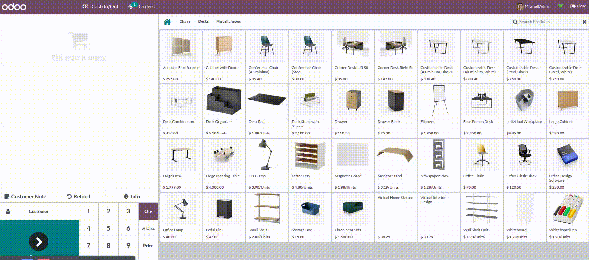

This module prevents users from processing POS orders with insufficient stock. It enhances inventory integrity and avoids overselling in retail scenarios.

1. Place the module in your Odoo custom addons folder 2. Update app list and install the module 3. Use POS as usual – the system will block negative stock orders1. Download the module zip file 2. Enable Debug Mode (Add ?debug=1 to your URL or Settings → Activate Developer Mode) 3. Go to Apps menu 4. Click "Import Module" from the top menu bar 5. Select the downloaded zip file and upload 6. Click "Install" to install the module 7. Use POS as usual – the system will block negative stock orders1. Connect to your Odoo.sh repository via Git 2. Add the module to your custom addons directory 3. Push changes to your repository 4. Go to your Odoo.sh database → Apps 5. Update app list and install the module 6. Use POS as usual – the system will block negative stock orders- No additional configuration required - Works automatically for all consumable products - Only affects POS orders (not regular sales orders) - Checks real-time stock availability including items already in cart- Odoo 19.0+ - Point of Sale module installed - Stock/Inventory module installed✓ Odoo Online (SaaS) ✓ Odoo.sh ✓ Odoo Community Edition ✓ Odoo Enterprise Edition